Lesson content · 课文
Lesson 42: Is there a ... in/on that ...? Is there any ... in/on that ...? · 在那个……中／上有……吗？
Listen and answer the questions. 听录音并回答问题。
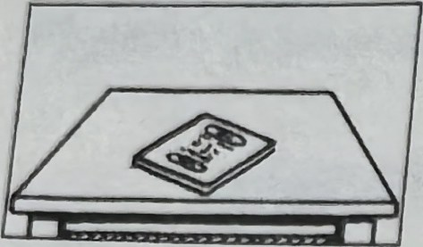
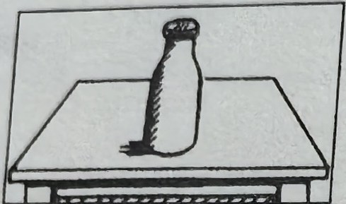
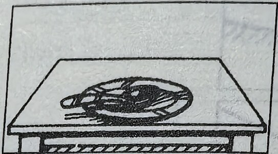
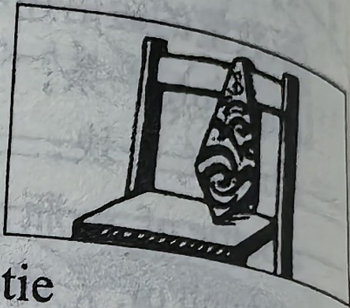
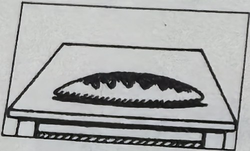
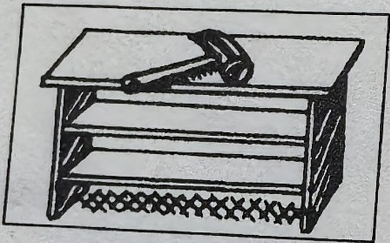
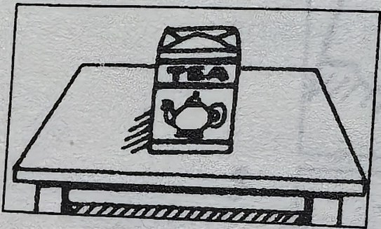
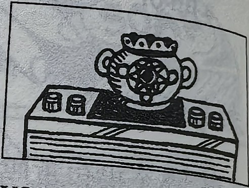
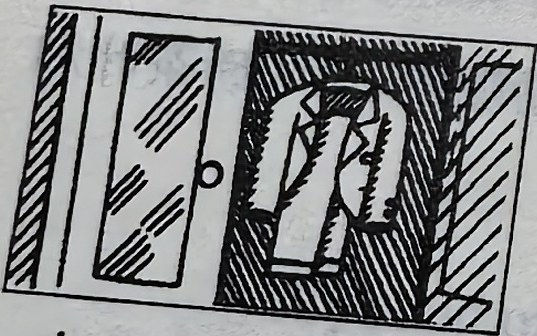
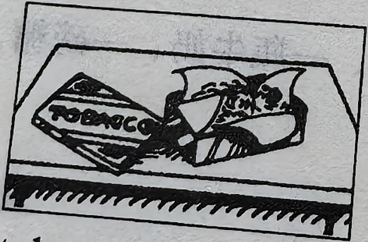
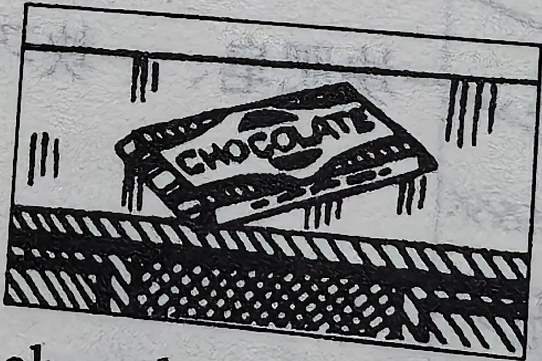
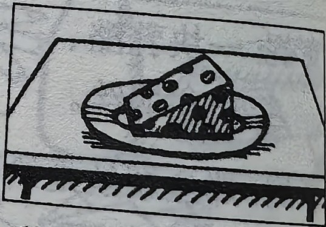
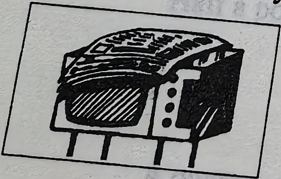
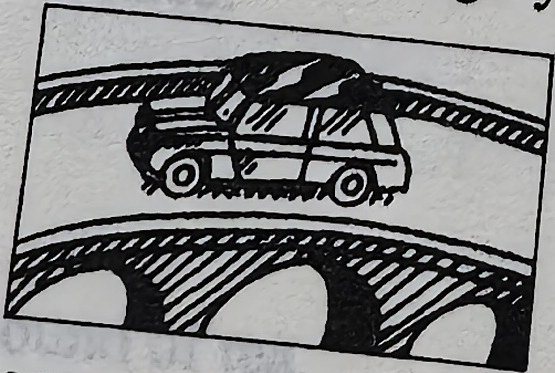
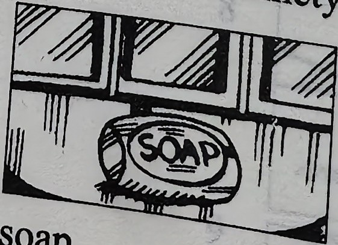
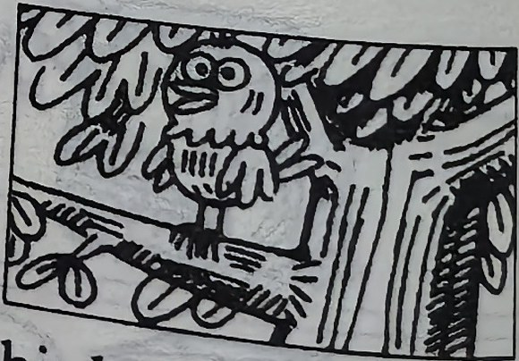
New words and expressions · 生词和短语
| Word · 单词 | Pronunciation · 音标 | Meaning · 词义 |
|---|---|---|
| bird | /bɜːd/ | n. 鸟 |
| any | /ˈeni/ | det. 一些 |
| some | /sʌm/ | det. 一些 |
Notes on the text · 课文注释
- some 和 any 是英文中表示数量的限定词，它们一般不能精确地说明数量究竟有多大，在汉语中往往译为“一些”。some 一般用于肯定句中，any 一般用于不能确定答案是肯定还是否定的疑问句和含有 not 或 -n’t 的否定句中。
Practice · 课文练习
Written exercises · 书面练习
A. A, any or some
Complete these sentences using a, any or some. 完成以下句子，用 a、any 或 some 填空。
Example · 例句
There’s a photograph on the desk.
Is there any milk in the bottle?
There isn’t any milk in the bottle.
There’s some milk in that cup.
-
textbook: A. A, any or some — Is there ____ bread in the kitchen?
-
textbook: A. A, any or some — There’s ____ loaf on the table.
-
textbook: A. A, any or some — There’s ____ coffee on the table, too.
-
textbook: A. A, any or some — There isn’t ____ chocolate on the table.
-
textbook: A. A, any or some — There’s ____ spoon on that dish.
-
textbook: A. A, any or some — Is there ____ soap on the dressing table?
B. Questions and answers · 提问并回答
Write questions and answers using these words. 模仿例句提问并回答。
Example · 例句
passport / on the table
Is there a passport here?
Yes, there is. There’s one on the table.
bread / on the table
Is there any bread here?
Yes, there is. There’s some on the table.
-
textbook: B. Questions and answers · 提问并回答 — spoon / on the plate
-
textbook: B. Questions and answers · 提问并回答 — tie / on the chair
-
textbook: B. Questions and answers · 提问并回答 — milk / on the table
-
textbook: B. Questions and answers · 提问并回答 — hammer / on the bookcase
-
textbook: B. Questions and answers · 提问并回答 — tea / on the table
-
textbook: B. Questions and answers · 提问并回答 — vase / on the radio
-
textbook: B. Questions and answers · 提问并回答 — suit / in the wardrobe
-
textbook: B. Questions and answers · 提问并回答 — tobacco / in the tin
-
textbook: B. Questions and answers · 提问并回答 — chocolate / on the desk
-
textbook: B. Questions and answers · 提问并回答 — cheese / on the plate
Practice worksheet · 配套练习
A. A, an, some and any
Fill in a, an, some or any. 用 a、an、some 或 any 填空。
| Look at this. 请看下表。 |
|---|
| There is some sugar here. |
| There is a pound of sugar here. |
| Is there any sugar here? |
| There isn’t any sugar here. |
-
worksheet: A. A, an, some and any — Is there ____ tea in the bag?
-
worksheet: A. A, an, some and any — There’s ____ coffee in the cupboard.
-
worksheet: A. A, an, some and any — Is there ____ bottle of milk on the table?
-
worksheet: A. A, an, some and any — ____ piece of cheese, please.
-
worksheet: A. A, an, some and any — Is there ____ electric cooker in the kitchen?
-
worksheet: A. A, an, some and any — There’s ____ soap in the bathroom.
-
worksheet: A. A, an, some and any — He’s eating ____ bar of chocolate.
-
worksheet: A. A, an, some and any — Is there ____ tobacco in the tin?
B. Structure
Answer using one or some and the location given. 模仿例句回答以下问题。
Example · 例句
Is there a newspaper here? — A newspaper? Yes, there’s one on the table.
Is there any bread? — Bread? Yes, there’s some on the table.
-
worksheet: B. Structure — Is there any milk? (in the refrigerator)
-
worksheet: B. Structure — Is there a vase here? (in the cupboard)
-
worksheet: B. Structure — Is there any soap? (in the bathroom)
-
worksheet: B. Structure — Is there a magazine? (in the bookcase)
-
worksheet: B. Structure — Is there any sugar? (in the tin on the right in the cupboard)
-
worksheet: B. Structure — Is there a basket here? (in the living room)
Grammar practice · 语法练习
I. Ask and answer questions, using the information given according to the example
- 1. There is an orange in that basket. (not banana)
Is there an orange in that basket?
Yes, there is.
Is there a banana in that basket, too?
No, there isn't. There isn't a banana there.
- 2. There is a map in that book. (not picture)
- 3. There is a cake on that plate. (not sandwich)
- 4. There is an egg in that tin. (not apple)
- 5. There is a shirt in the wardrobe. (not suit)
II. Ask and answer questions, using the information given according to the example
- 1. There is some sugar in that cup. (not tea)
Is there any tea in that cup?
No, there isn't. There is some sugar.
- 2. There is some milk in that glass. (not water)
- 3. There is some tomato juice in that bottle. (not orange juice)
- 4. There is some tea in that cup. (not coffee)
- 5. There is some butter in the cupboard. (not cheese)
- 6. There is some ink on that desk. (not paper)
Your notes and answers
Use this space for longer responses or exercises that do not have an individual answer box.